4. Additional lighting This can add interest to the background

For questions - please contactt inboxavsdispatch@ jw.org
SECTION I - PREPRODUCTION AND PRODUCTION (PAGES 2-6)
C. Interviews
D. Research
F. Set Building
G. Dialogue
H. Thumbnails
J. Overused
K. Modesty
SECTION IV - VIDEO ASSIGNMENTS (PAGES 12-16)
|
A. | |
|
B. C. 1. 2. D.
E.
F. |
Apply Bible Princi ples Teachings That Benefit Special Witnessing Initiatives Bethel Videos Spiritual Programs Construction Projects Life Story Truth Transforms Lives Meet Fellow Believers |
APPENDIX (PAGES 17-46)
Rev. 2017-07-21
SECTION I — PREPRODUCTION AND PRODUCTION
1. Frame Rate: Choosing a frame rate will vary depending on the subject matter of the video. The choice whether to shoot 24p (23.98) or 30p (29.97) will be left to the discretion of the DP (Director of Photography) working closely with the Director’s preference. From time to time, a video or sequence may be part of a larger group of segments. On these occasions, you may be asked to film at a certain frame rate to match other video footage. When this occurs, the required frame rate will be specified on the Video Assignment Form.
2. Aspect Ratio/Resolution: Generally speaking, it is preferred all videos be shot with a 16x9 aspect ratio at 1080p. If a project comes up where a DP feels there would be specific benefits to shooting at a different aspect ratio or resolution, this should be approved by Production Oversight at WHQ.
3. Codec: If ProRes 422 is not possible, do not convert to ProRes. Rather, please send highest quality bitrate *.mov or *.mp4 file, and we will convert locally. This saves time from downloading a large file unnecessarily.
1. The medium of the project’s release (i.e., JWB, VOD, jw.org) will affect how you write the story, especially what you include in the beginning of the video. JW.org videos are stand-alone videos, with a simple explanatory caption. Because of that, the video should tell the whole story. Most VOD projects are the same. But for JWB segments, the anchor’s introduction (or lead) is an integral part of the story and not aredundant comment or a summary of the contents of the video. Instead, it is very similar to what is described in Study 20 of the be book, “Scriptures Effectively Introduced.” The intro arouses interest in the video that the audience is about to see. However, since a video is much longer than most scriptures, a television anchor will also try to briefly answer some basic questions, in his lead - who, what, when, where, why and how - in his lead. This means that certain basic data about the event or the individual should be left out of the video so that the video can focus more on the events that make up the story and the application of these. This will also help limit some redundancy between the anchor’s comments and what is stated in the video. With that in mind, please communicate with the Story Team what you have left out from the final video edit for the benefit of the anchor.
2. Also, the first draft of a video will many times contain some redundancy or aspects that do not necessarily add to the lessons that are being highlighted. Many stories can thus be abbreviated with a clear application intact. We recommend that the editor and director create a written transcript and review the selected interviews and narration from a writing aspect first before editing the video. Look for what sections, sentences, or words can be deleted and yet maintain the integrity of the story. Although a comment may be very important in the eyes of the interviewee, it may not be necessary for the overall benefit of our worldwide brotherhood.
C. INTERVIEWS (Please see information in Appendix B and C)
1. If your video assignment includes interviews, ensure that you are thorough and explore, at the very least, the following questions about each subject brought up: Who? What? When? Where? Why? How? 2. The eye line of the person being interviewed should be just off camera (right or left), but it should be clear that the interviewee is not looking into the camera. If you are shooting more than one interview in the same place, try to alternate where you place the interviewee in the frame, from left to right. (Please refer to Appendix C on page 26.)
3. The interviewee’s comments should be understood without hearing or knowing the question that was asked. The interviewer should not be included in any way, whether visually or in the audio recording.
4. If you are used to interviewing for our written publications, do your utmost to resist the temptation of acknowledging the interviewee’s comments while he or she is still speaking, since that would be included in the recording. Also, remember that sometimes the best way to encourage an interviewee to elaborate on a subject is by simply remaining quiet, as opposed to posing a follow-up question. In addition, to draw out an individual’s deepest thoughts on a subject, try not only to cover the mere facts about an event, but ask questions such as: “What went through your mind when that happened?” “What was your reaction when you heard that?” You could also try asking, “Why did you decide to do that?”
5. Please review Appendix B on page 21.
1. If footage will be captured portraying a Biblical or historical (including modern-day) scene, Audio/Video would like to provide you with the approved images from the organization’s archives or the WHQ Art Department to ensure the most accurate portrayal possible, especially as it relates to sets, props, and wardrobe. There is a desire to keep to the standard look set by the Art Department. Therefore, please contactt AV Story, and they will work with the Research Team for these materials.
1. Any methodsthatcan be used to keep the footage and video current should be taken. For example, avoid certain pieces of literature that are older or outdated. You may be aware of certain publications being replaced in your language. Avoid showing the year-for example, on the daily text-if the publication has a yearly release. Additionally, certain hair and dress styles, while still appropriate, can be perceived as trendy. Making an effort to keep the choices of dress and grooming more classic will help keep a video current.
1. If it is decided to build a set, please avoid the tendency to leave walls bare. Blank walls do not look good on camera nor do they appear realistic. Also, avoid making the set appear “too perfect,” which conveys that it was built and painted yesterday.
1. If the one interviewed speaks English with a thick accent and English is not his native tongue, it is preferred that the interview be recorded in his native tongue. If he only speaks English but has an accent that may be difficult to understand, please assist him in speaking clearly with proper enunciation and add subtitles to all deliveries, even prior to Teaching Committee review. This will enable both the Story Team and the Teaching Committee to clearly understand what is being said.
2. When selecting English voice-overs for those speaking in another language, bear in mind that the clear enunciation of the English language is most important. For all deliveries, both proxy and final, persons with clear English diction should be selected. Please do not subtitle non-English speech. Those selected for voice-over recording should not have an accent that makes it difficult to comprehend what is being said. Also, an individual’s seniority should not be a determining factor when selecting someone to record. For the deliveries prior to Teaching Committee review, it may be most practical and time efficient to record someone who lives nearby the audio recording facility. Following the Teaching Committee’s review and comments, the selected persons for the final English voice-over recordings should be used.
1. Thumbnails are pictures used on the jw.org and JW Broadcasting websites to display each clip. When clicking the thumbnail, the user will be taken to the video. We request your assistance in providing photos for this purpose. This should be done for all videos, with the exception of JW Broadcasting postcards (see section IV.B).
Please provide the following:
• Arrange the thumbnails as Option_A (your preferred one) and Option_B.
• The theme of the shot should represent the overall message of the story.
• The images can be taken with a sti ll camera or high-quality frames can be extracted from video footage.
• Avoid video frames that capture a person mid-sentence or mid-word.
• Make sure that there is nothing in the shot that would need to be bl urred (e.g., advertisements, signs, or other copyrighted items).
• The i mage should have sufficient headroom. Medi um shots are better than close-ups. When submitting your two images, a medi um shot, a ful l-length shot, and a wide shot would be preferred so as to provide a variety of options.
2. Thumbnails should not have the individual placed too far left, so as to avoid covering the head of the individual, as seen in the examples provided. Also, a slight dark gradient is typically applied to the left. Keep this in mind when framing your pictures.
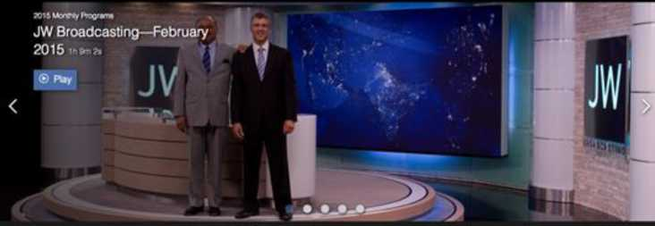3. The photos you provide will also be used for smaller thumbnails, such as the ones below. However, please note that all cropping of photos will be done by Audio/Video. The examples shown here are only to give you an idea of the final use of the photos you propose.
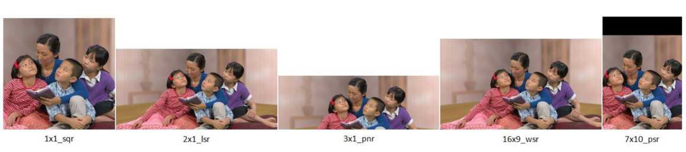At this time, please avoid the following subjects:
• Higher education.
• Blood: Medical subject matter is permissible if the blood issue is avoided.
• American football or other sports that are, or may be, perceived by some as violent in nature.
• Disfellowshi pping.
• Negative comments about non-Witness fami ly members that are sti ll al ive.
• Negative comments about false religion. If referring to someone who was of another rel igion before, focus should be more on how the Bible affected them, instead of negative comments about their prior rel igious background. False beliefs and practices can still be mentioned in arespectful way. Try to imagine the reaction of those currently in spiritual darkness. Would they be attracted or offended?
• Highlighting experiences that could put the l ives of publ ishers or their freedom at risk due to religious or pol itical envi ronment.
• Customs or practices that in themselves are not wrong, but could appear weird or awkward to our international audience if left unexplained. At times, though, if it is a JW Broadcasting segment, these can be explained by the anchor. Please communicate with Story Team prior to your video shoot if this appl ies to you.
Sometimes certain objects, habits, or cultures get accidentally overexposed in our videos. To prevent that, we have outlined some things to avoid when producing videos. This list will be revised over time.
• American-size homes, which are not common around the world, come across as too large. We recommend a pa rtments or smaller homes for fi lming. The same princi ple could apply to expens ive cars.
• Using tall trees as a symbol when tal king about finding the truth.
• Pouring, making, brewing, and drinking coffee or tea is becoming quite common in our videos.
The standard of dress and grooming in our videos should reflect well on our organization and Jehovah God. Our publications, including videos, are often used to gauge what is or is not acceptable. A good guideline for any publisher depicted in our videos is found on page 3 of the brochure Dress and Grooming for Visitors Touring Bethel (dgb). For example, the following should be avoided in your video:
Although focusing on Bethel, the illustrations in the dgb brochure reflect our universal Christian standards. While dress at a social gathering will differ from that at a Kingdom Hall or in the ministry, the principles apply no matter where we are.
Since the majority of videos produced will be for distribution to a worldwide audience, it is critical to ensure all necessary permissions are secured. The legal documents can be obtained from PPD or inboxavsdispatch@jw.org.
1. Theocratic permissions: Please ensure all individuals prominently featured or otherwise presented in privi leged positions in our video publications have been cleared by a Branch Committee, Service Department, or the congregation Service Committee. Please remind the brothers to immediately alert Audio/Video Services should a person selected to be featured in a video becomes disqual ified in any way.
2. Model release: Please obtain a properly fil led and signed release permitting the organization to use the recorded image and/or audio of the individual . Please include a photo of the individual in the designated area of the release.
3. Intellectual Property (IP) release/Non-exclusive license: When a creative work (artwork, music, photograph, etc.) is featured in a video, please obtain a properly filled and signed release from the originator, or creator (not current owner) of the work. If the creator does not wish to relinquish the work to the organization, please obtain a non-exclusive l icense to secure permission to use the work.
4. Location release: When recording on private or state property, please obtain permission from the owner or manager and have someone authorized fil l and sign arelease.
SECTION II — POSTPRODUCTION
A. EDITING
1. The video editor wi l l edit both the video and audio cli ps within FCP X. The video editor can usua l ly produce an adequate mix for del iveries up to Picture Lock Del ivery.
2. Please assign audio roles to cli ps within FCP X. More information about assigning roles to audio clips ca n be found on PPD at http://ppd.bethel.jw.org/AudioVideo/Pages/RoleAssignments FCPX.aspx.
3. The first and last frame of the clip should never be black. Please do not fade in from black in the beginning of the video or fade out to black at the end.
4. Sta rt the segment on B-rol l, and end the segment on B-rol l.
5. The first shot of the video should not be less than three seconds . Otherwise, it could appear as a stray shot.
6. Audio should not start at 0 frames. Audio should not start earlier than 0.5 seconds into the clip and no later
than 1.5 seconds into the cli p. We recommend that music and narration not start at the same time.
7. The video should not end on a freeze frame immediately after the last words are spoken or when music ends,
whichever is perceived as the natural end of your segment. Thus, leave a long shot at the end that s tarts no later than 1.5 seconds before last words/music ends and continues for at least 6 seconds after last words/music ends.[1] This long shot mentioned above should be one continuous shot—no cuts or dissolves.
8. Using slow motion so as to extend the last shot of the video is approved only if it fits artistical ly with the rest of the video. However, try to avoid that solution to the extent possible. Instead, it’s best to carefully plan the concl uding shot in preproduction or to capture multiple options.
9. It is preferred that shots be no shorter than two seconds. If the shot would requi re a lower third, make sure it’s no shorter than three seconds so as to allow sufficient ti me for the audience to read the text. The shot would need to be long enough in durati on for the OST to be displayed.
10. Any relevant text (either OST or text on-camera) has to be displayed long enough for a slower-than-average reader to finish reading it. For example, the text “Application for Regular Pioneer Servi ce” would most likely take three or four seconds to read, assuming that the text is displayed in a way that draws the viewer’s attention to it immediately.
11. If any graphics are used (animation, charts, graphs, etc.) do not burn text into cl ip, since such text wil l li kely need to be translated. Provide a clean cl ip without text.
12. If displaying a quote from a scripture onscreen, there should be no narration on top of that OST unless the narrator is reading the full scri pture.
13. If a shot involves a pan, ti lt, focus pull, or the li ke and the end of such transition reveals something new— such as a person, an event, or a sign—at least two seconds should be al lowed for the viewer to comprehend what is seen after the transition finishes.
14. If in the edit ti meline two separate interviewees are right after each other and placed si mi larly in frame (e.g., both left in frame), cover the cut with B-roll .
15. There is no need to include the jw.org logo, the JW Broadcasting logo, or other credits at the end. Al l credits are added later in the process. Please inform us of any credit needs that you may have so that we can follow accordingly.
16. As the video editor, we would li ke you to be responsible for all needed blurs. A blur l ist wil l be sent to you after the video is reviewed. Please apply the requested blurs prior to submitting your Final Delivery package. (See p. 9.)
17. It is a good fundamental practice to cut together a video to make it content driven and visually engaging. Other than for a music video, please do not edit a vi deo to the beat or rhythm of temporary music. Instead, edit the video to tell an interesting story that wi ll hold the attention of the viewers even without a music
[1]
Please note that this is not direction on how long your music or narration should be but, rather, what should appear on screen, visually, during and after music/narration ends.
score. Insert music in selected places to accentuate the content and sti r the emotions. P lease do not cover the video with “wall-to-wall” music.
18. If Watchtower images from I mage Services System (ISS) are to be used as pa rt of your B-rol l, please request these through inboxavsdispatch@jw.org.
19. If commercial images or video cli ps are desi red as pa rt of your B-rol l, pl ease search for watermarked comp clips from Pond5, Shutterstock, or iStock, as Watchtower already has an established relationship with these companies. If you must use commercial content from another source (including special fonts), please check with inboxavsdispatch@jw.org before making it a definite part of your video. Please provide the company name and clip number for the footage you’re interested in, but DO NOT purchase it. All licensing of commercial footage wil l be done after Picture-Lock by Audio/Video Dispatch so as to ensure proper licensing and keep all contracts under one entity. Keep in mind that because of the type of l icense and rights we requi re, the pricing for such stock footage wi ll almost always be significantly more than what is advertised on the website under a genera l login. For example, Pond5 and Shutterstock wi ll typical ly be $125; iStock, $200 -$300; Getty Images, over $500.
B. AUDIO
1. Pro Tools should not be used until after Picture Lock Delivery (PLD). For al l del iveries prior to PLD, please mix and edit the audio as best you can within FCP X. The video editor can usually produce an adequate mix for deliveries up to Picture Lock Delivery.
2. If a final mix is provided to you, we request that you please not make adj ustments to the volume, individual tracks, or other audio settings. Please communicate any concerns to inboxavsdispatch@jw.org. The final audio mixing for JW Broadcasting segments wi ll be done by AVS in order to equalize al l the segments for the enti re monthly progra m.
3. Audio in all renders should be 24-bit/48kHz. If source audio is of low quality (for example, cell phone), please provide the original source audio files separately.
4. Al l B-roll needs ambient sound from the very first frame to the last frame of your video. The ambient sound has to be connected with what is displayed on-screen so as not to be confusing to the viewer.
5. If the narrati on was in a language other than English, your team wi ll be responsible for preparing the English voice-overs using individuals with clear English diction.
6. English voice-over of foreign language—Permit a few seconds of the original language voice to be heard and then drop the audio completely and introduce the English voice-over. This should be done only for the first statement from a participant in the program. Thereafter, when that partici pant speaks again, there is no need to hear the original language at all . The voice-over should be spaced in a way to avoid long sections of si lence when the partici pant is seen on screen again. (Please note, however, this audio ducking must not be burned into the final sync dialogue stem. (Please see Section III.F.2 regarding final audio files.) If your video frame rate had to be converted to 23.97 or 29.97, please ensure that the audio file you submit matches the converted video file perfectly.
7. As per the IVA:IVF August 2, 2016 letter, please do not engage local composers to score music for your videos. Audio/Video Music wil l direct that work after Teaching Committee approval of the video. Therefore, it is recommended you use tempora ry music to give an idea of the desi red feeling. You may download watermarked proxy music clips from Westar Music, Music Bed, Premium Beat, or Audio Jungle. Please document the source of any proxy clips in the Music Description form. Keep in mind that music should start at 0.5 seconds at the earl iest (see p. 7 for further detai ls).
8. If you would like to use sound effects in your video, please refer to the instructions outlined in the HTA:IVA August 18, 2015 letter for using Sound Ideas as a primary source for sound effects. Another option is for you to record your own sound effects, provided doing so does not infringe on any copyright restrictions. If these two options are exhausted, you may also look to Premium Beat or Audio Jungle, but please check with inboxavsdispatch@jw.org before doing so. Always document the source of any sound effects so needed l icensing and attribution (credits) can be followed up with.
NOTE: Delivering materials is ultimately the Production Coordinator’s responsibility. However, he may delegate these tasks as necessa ry as long as he is kept informed. Please del iver a l l materia ls via AVMD.
A. FIRST DELIVERY - (To the inboxavsstory@jw.org and inboxavsdispatch@jw.org) 1
1. Review copy: An MP4 (480p/1000kbps) copy of the video. 2
• Should have basic color grading applied
• Should include a time code window at top center.
• Should include all lower thirds.
• The first frame should be in full color as well as the last frame
(no +10 seconds of black).
• Na me this video Naming Convention_1st Delivery.
Naming Convention
The naming convention (mnemonic_short title) will be provided to you by Dispatch in the Video Assignment Form and will be a unique identifier. The name of the videos you deliver will include this naming convention and the delivery. For example:
jwb17_01_07_Warm Hearts_1st Delivery
jwb17_01_07_Warm Hearts (naming convention)
1st Delivery (delivery description)
Notes for Production Teams at Patterson
[1] Include Production Overseer, Production Assistant Overseer, your Team Production Coordinator, and Project Director
[2] Render the movie out to the 06_Deliverables/01_Story folder
[3] Import to PubMan
[4] Save these documents to the 01_Project_Information/Legalities folder
[5] Save this document to the 01_Project_Information/Documentation folder
[6] Save this document to the 07_Music folder
[7] Include your Team Production Coordinator and Project Director
[8] Render the movie out to the
06_Deliverables/02_BranchMaterials/PicLock folder
[9] Simply provide a link to the Prepared PicLock FCP library. This library should never be adjusted by the editor
[10] The editor will receive an XML from the colorist. After QC of the color based on reference movie that Branch Materials generated and a copy of PicLock Library, a new FCPX bundle with the final color will be saved to 06_Deliverables/02_BranchMaterials/Color/Fro m Color
[11] Save the hi-res image to 05_Graphics/Thumbnails
[12] Save research documentation to 01_Project_Information/Research
[13] Please contact Dispatch for assistance with this step
2. Review copy for Music: An MP4 (480p/1000kbps) copy of the video without music; only dialog and sound effects. Please name this file Naming Convention_1st Delivery-Music.
3. Music-only stem: This track should match the length of the review copy of the video. Please name this AIFF file Naming Convention_1st Delivery-Music.
4. Music Description Form. Provide details about the music used.6
5. Transcripts and OST/L3: Please provide the original-language transcript and its English translation. This editable
Word document (not PDF) should clearly outline who speaks and what they say. Fact sources and research should be included as marginal comments. At the end of the English transcript, please append the transcript for all OST and lower thirds text. Name this single document Naming Convention_Transcript.3
6. Compiler Approval Form: Provide title and thumbnail options. Provide blurb options for music video segments. AV Dispatch wil l request blurbs for other segments as needed. Please name Compiler Approval Form - Naming Convention.3
7. Initial Legal Documents: Model, Intellectual Property, and Location releases as well as preliminary Master Cast list.
4 Please provide one model release for each individual, and name the file ModelRelease-LastName_FirstName.
8. Commercial Footage Document: Please provide source information for all footage and images used in the video that were not shot by the production team.
9. Research Documents: Please provide supporting documentation for any stated facts. For example, provide the official Admin full-time service records (from the Service Department) for any individuals in the video who are mentioned to be appointed brothers or in the full-time service.12 (Please refer to Appendix B)
10. Interview Documentation Form: (This is needed only for videos which include interviews). Also, if an individual’s name is mentioned in the anchor’s script please provide a simple audio recording of the correct pronunciation of the 5 name.
11. Comments for anchor: (This is needed only for JW Broadcasting segments).5 The anchor needs to include comments in his introduction to the video or after the video has concluded. If the story revolves around an individual (as opposed to an event), please include answers to the following questions about the main characters:
• Congregation appointment (e.g., elder, pioneer)
• Current avenue of full-time service, if applicable (e.g., Bethelite). If in the full-time service, please include the individual’s full-time service record from the Service Department.
• Location (e.g., lives in London)
• How long did they endure their particular opposition or challenge?
• Can other details be provided to assist the anchor’s introductory or concluding comments?
B. DELIVERY WITH EDITS (STORY) — (To the inboxavsstory@jw.org and inboxavsdispatch@jw.org).1
1. Review copy: An MP4 (480p/1000kbps) render of the video with all requested adjustments applied. This should also include a timecode window at top center of the video. Name this video Naming Convention_DWE-Story.3
2. Updated transcripts: Please provide updates to the original transcript document using the Track Changes feature in Word.
C. DELIVERY WITH EDITS (COMPILER) — (To the inboxavsstory@jw.org and inboxavsdispatch@jw.org) 1
1. Review copy: An MP4 (480p/1000kbps) render of the video with all requested adjustments applied. This should also include a timecode window at top center of the video. Name this video Naming Convention_DWE-Compiler.3
2. Updated transcripts: Please provide updates to the original transcript document using the Track Changes feature in Word.
3. If the video includes translated/transcribed footage in another language, verify that the original language is grammatical ly intact and agrees with the English voice-over in content.
D. DELIVERY WITH EDITS (TC) — (To the inboxavsstory@jw.org and inboxavsdispatch@jw.org).1
1. Review copy: An MP4 (480p/1000kbps) render of the video with all requested adjustments applied. This should also include a timecode window at top center of the video. Name this video Naming Convention_DWE-TC.3
2. Updated transcripts: Please provide updates to the original transcript document using the Track Changes feature in Word.
E. PICTURE-LOCKED DELIVERY — (To the inboxavsbranchmaterials@jw.org and inboxavsdispatch@jw.org). 7
After Story has declared picture lock, please provide the following:
1. Reference video: An MP4 (480p/1000kbps) copy of the latest version of the video with all audio, OST, and lower thirds included. The video should be named Naming Convention_PLD.8 __________________
|
2. The FCP X library bundle:9 Consolidate only the used media to a folder using a |
HELP: Please refer to |
|
collapsed time line. Please zip the media folder and the FCP X library separately, and |
this helpful PPD page, |
|
upload both to AVMD. Using the consolidated project, create a new FCP X library |
for a detailed |
|
bundle for transfer to AVS. (For a 5-6-minute video, the PLD package should typically |
explanation on properly preparing |
|
be about 20-40GB.) |
the Picture-Locked |
|
3. Final adjusted transcript: Please provide updates to the original transcript document |
Delivery. |
using the Track Changes feature in Word.
4. Thumbnail images: Please provide color corrected image files of the approved thumbnails option submitted in the Compiler Approval Form (See section III.A.4). These images should be TIFF or PNG files of the highest
.....11
possible pixel resolution (See section I.H.).
5. Final Master Cast list
6. Production report
Please note that a ny cha nges made to the video (such as adjusting B-roll, adjusting script, etc.) that were not requested are not permitted. If changes are desired, the AV Story Team should be notified about which files you would like to replace (specify ti mecodes) and why. This is to ensure the proper legal checks are made and to verify the Teaching Committee would approve.
F. FINAL DELIVERY - (To inboxavsbranchmaterials@jw.org and inboxavsdispatch@jw.org)7
1. Updated FCP X Library bundle: This Library (Naming Convention_Final Delivery) should have al l the final audio and color adj ustments applied. 10
DaVinci files: If color correction was done using DaVinci, please provide DaVinci renders as well.
Coloring Tools: Please be sure to only use AVS approved coloring tools such as Final Cut Pro, Color Finale, and DaVinci.
2. Final audio files: Final mix and each stem should match the length and sync of the video render and be 24 -bit/48kHz. Please provide the following:
• The entire original Pro Tools session (ZIP file of the session parent folder). This session will include your original audio files that have been edited and processed to produce your final mix (please do not send a Pro Tools session with just final stems in it). If the audio could not be mixed and edited in Pro Tools, please provide a n AAF fi le (different from AI FF).
• AI FF stereo stem of fina l mix. (Average mix l evels -20 LUFS and -4dB peak.)
• AI FF mono stem of sync dialogue only. (Sync dialogue is the audio that is spoken by someone who is seen on
camera. Ducking should not be burned into this stem.)
• AI FF mono stem of voice-over. (This is the person who tra nslates the sync dia l ogue mentioned above.)
• AI FF mono stem of narrator. (This a pplies if a narrator is used. For tra nslation purposes, it is good to keep this
file separate from the audio of those seen on camera.)
• AI FF stereo stem of a l l mixed sound effects (a mbient, sound effects, Fol ey, etc.).
• AI FF ste reo ste m of mixed musi c onl y.
3. Color master: A ProRes movie fi le with al l the color grading adj ustments burned in but without any OST, lower thirds, or audio.
4. Reference video: An MP4 (480p/1000kbps) copy of the final version of the video with al l audio, OST, and lower thirds included.
After AVS has final ized the video, you wil l receive an e-mail notification to review the final version of your video. Please ensure the video is color corrected, incl udes final audio, and any applicable effects. Please review the final video and reply to inboxavsbranchmaterials@jw.org within 4 working hours.
SECTION IV — VIDEO ASSIGNMENTS
1. If the video is selected as one of the highlights of that month’s JW Broadcasting program, you may be requested to provide footage that can be used in the beginning of the program when the anchor highlights three segments. Ifyou receive such arequest, please provide 15 raw shots (that is not simply extracted from the final edit, but the raw footage) that are five seconds or longer in duration. Each clip needs to be usable in full, and thus the five seconds should not include any technical or visual preproduction or mistakes. The clips should be ones used in some form in the final edit.
1. If asked to put together a “postcard” to conclude a JW Broadcasting program, please provide us with a total of approximately 20 video clips showing the brothers and sisters in the requested area or congregation. We would like an assortment of various greetings and activities. Some may be waving, others smiling, while others are busy doing theocratic activities with a smile.
2. We appreciate shots where the brothers are waving or smiling while looking at the camera. However, please also capture them busy working or socializing without addressing the camera waving and smiling. This provides options. Please include the young ones as well.
3. Also, keep in mind that the video will be narrated by an anchor in the studio. Therefore, it is appreciated if we can clearly hear the group of brothers and sisters say hello in their native tongue, but there will be no opportunity to convey messages due to the voice-over narration. No raw clip should be shorter than six seconds of usable footage. Make sure to get good quality audio at all times. Ensure that no audio of the videographer or director is recorded.
4. Additionally, we would like to include in the anchor’s comments interesting details specifically about that congregation and the region in general. What is their territory like? What challenges do they face and how are they overcome? Please include the number of publishers, pioneers, servants, and elders.
5. When providing comments to be used by the anchor, please inquire about the theme of the hour program where the postcard will be featured to perhaps tie in the comments on how the brothers and sisters in that specific region are applying the monthly program theme.
6. No thumbnails need to be provided for postcards.
1.1. This is a video recorded without live audio. The story told is mainly by means of a voiceover, music, and sound effects but supported by the visuals seen on-screen. Examples of videos in this category are Act Wisely When Bullied and Keep Improving Your Family Worship.
1.2. Let facial expressions tell the story as much as possible without being over the top. Realistic acting is needed. Auditions should focus more on the visual communication and not so much on the verbal. Music is one of the most powerful tools in this video. It can stand alone at times for a few seconds to carry the emotional story. Do not be afraid of using strong pauses.
1.3. Please choose the wording of the voice-over carefully. The person chosen to do the voiceover would need to be someone who can grasp and convey the emotional state in the video. Hearing the mental thoughts and feelings, by means of a voice-over allows us to say things that we may not normally get away with, which is very similar to a soliloquy at an assembly or convention. The voice-over does not need to narrate everything happening onscreen. Instead, the narration should be taking the lead since it is the individual’s thought process we are interested in. For example, if the narration says, “I had been smoking for 40 years,” it is not always necessary to show it on-screen. The more sensitive the subject, the better it is to rely on the narration as your communication tool as opposed to the visuals.
1.4. Please show at least one Scriptural text briefly—no more than two. Unless the narrator is also reading the scripture, do not add narration when the scripture text is shown on-screen. Make sure there is sufficient time for reading the scripture, since this is one of the main points of the video.
1.5. No dialogue is heard; only the voice-over.
1.6. Reenact one Bible scene which highlights the main teaching point. Be creative and accurate.
1.7. While the creative and artistic look is important, the clear and simple teaching should stand out more than the visuals.
1.8. Generally, no script is needed for approval since the voice-over can generally be rerecorded easily if adjustments are needed. AVS Story Team will notify you if a script is required for approval.
1.9. Stay as close to the treatment as possible. Anything omitted or adjusted should be approved by AVS Story Team prior to execution.
1.10. We would like to diversify the ethnicity as much as possible, so please check with AVS Story Team on which ethnicities are currently being underexposed or overexposed. If you are filming this in a foreign branch, we appreciate the variety you are bringing to the program. We want to avoid being “U.S.-centric” or always using Caucasian people.
1.11. Avoid as much as possible “Americanizing” the videos by using large homes, expensive gadgets, etc. We want it to be international, so as to unite our brotherhood.
1.12. Information on how the recording could be organized, including a sample schedule and crew size, can be provided at the project kickoff meeting. Additional sample videos that have been finished can also be provided.
2.1. This three-minute-or-less video is made up of B-roll, areenactment, coupled with a narrator (third person) explaining briefly how to apply one specific Bible principle.
2.2. The tone of the narrator should reflect the mildness, compassion, kindness, and love that would reflect the attitude and speech of Jesus. The narration should not be redundant with the visuals.
2.3. The simple, clear teaching should stand out more than the visuals or the characters. This series is cinematic in nature and driven by clear teaching, powerful visuals, and music that will emphasize the mood of the situation.
2.4. Since no script is used, facial expressions and realistic acting are important aspects.
2.5. An example of this series is Love and Respect Unites Families.
1. Special Witnessing Initiatives
1.1. Style: This series is a documentary combining a narrated story, observational B-roll footage, and a documentary interview. Tell the story of the special initiative from the viewpoint of both a Witness involved in the initiative and a person or family who benefited by the initiative. In most cases, the main benefit would be finding the truth. If the story can be carried by interviews only (as opposed to both narration and interviews), that is also fine. The important key is that the story is equally understandable.
1.2. Artistic treatment: Use subtle visual metaphors and contrast to establish and develop the transition from conflict to resolution. Initially, use limited camera movement and more contrast in lighting during conflict shots without it being overly dark or dramatic. Transition to shots that are more evenly balanced as the story is brought to resolution.
1.3. Connection to audience: Combine the above visual effects with shots that establish the joy, satisfaction, and fulfillment that come to the Witness and householder as aresult of the initiative. Use everyday-life shots of those involved to help establish a connection with the viewer. The objective is to show that areal-life Witness can consciously adapt their circumstances to reach out to do more in the ministry.
1.4. Cast: The series should include those that carry out the initiative, those that organize it at the branch, and those that have already benefited. It is preferred that those that have benefitted are baptized. In some cases, positive comments from appreciative nonWitnesses or authorities are OK to use, but the focus should be on those that have taken a stand for Jehovah as aresult of the initiative. When interviewing responsible brothers from the branch, they should be joyful in their interview and not overly serious. Since it is a documentary, it is preferred that Witnesses not be used to portray those who are interested. Instead, try to capture real events using interested persons that do not mind expressing appreciation or being captured. Of course, for those that agree and would be recognizable, a model release is needed. In all cases, discernment is of the utmost importance. However, if it is necessary to use a Witness to portray an interested person, the Witness should be unrecognizable.
2.1. Initially, these are made for branches for use in tours or training. However, there are times these are requested for another medium or purpose, and adjustments are usually necessary for various reasons:
• Redundancy of content due to other, similar videos already released.
• Allows the branch to continue showing the video locally, knowing that it would still have new information that was not released publicly.
• Legalities may require that certain footage not be used for a broader audience.
3.1. As time progresses, there will be more and more spiritual programs released. These will no doubt include dedications of RTOs, Assembly Halls and branches. This series also include branch reports from time to time. Avoid including large sections of talks by members of the Governing Body or their helpers to keep their outlines from needing continuous updating.
3.2. Due to the repetitive nature of some of these programs, it is requested that the videos be angled to highlight the local environment. What needs are currently there? What challenges were on this particular project? What comments did the speaker make that applied to the circumstances or environment of the event? What did the local friends do to support the event? Giving the video a local flavor, including showing the surrounding scenery, will allow these videos to not be overly redundant and will allow the culture and people of the area to be beautified and highlighted.
3.3. Try not to include too much information—similar to squeezing in too many scriptures into a five-minute talk.
4.1. Look for fresh angles. Avoid repeating what others have done.
4.2. While we appreciate occasionally seeing B-roll of workers smiling and waving, a balanced variety of seeing our brothers and sisters working, associating, smiling, and waving is desired.
1.1. This series focuses on the life lessons of an individual. It is driven by comments made by an individual in an interview setting. Practical application for the viewer is important. The series can be used to relate a theocratic career, life lessons and specific events or difficulties that were overcome. A narrator is not used. Old photos or video footage are recommended when covering past events.
1.2. If possible, try to record the interview with two cameras so as to provide the editor with options that reduce visual redundancy. Alternate shots can also be used to add emphasis during key phrases. This series is shot with a less cinematic style than a “Truth Transforms Lives” video. Instead, life stories can look more like ENG (Electronic News Gathering), which is less dramatic. In all cases, please verify the historical accuracy when making reference to dates, other individuals, or places.
1.3. Reenactments of past events are not needed. Instead, a lot of the B-roll would focus on the individual’s environment today. This could include their day-to-day life and theocratic assignments, such as preaching, giving talks, encouraging others, studying or preparing for meetings, leisure moments, or Bethel work. If married, it is advisable to show them spending time with their mate.
1.4. While music is desired, it typically is not needed throughout the entire video, known as “wall-to-wall music.” It will be needed in the beginning and end as well as in selected spots to highlight a key moment.
1.5. An example of this series is James Dyson: Jehovah is Kind and Merciful.
2.1. Interviews coupled with B-roll footage drive this series. There is no narration.
2.2. The story should center on a Scriptural truth, and a Bible principle should be the motivating factor in the change. While details such as conduct of others, meeting atte ndance, or having a good Bible study conductor may be contributing factors for the transformation, this series should highlight what Bible truth led them to change their previous course or habits.
2.3. The footage is dramatic and cinematic and requires reenactments of past events. Music is used to carry the story from beginning to end. We only show occasional pictures of the past by filming framed pictures in passing. Plenty of B-roll of their current lifestyle and surroundings should be used.
2.4. An example of a video in this series is Burt Mann: I Have Finally Become Something or Forest James: A Medicine Man Encouraged Me to Read the Bible.
3.1. This short video of about 1.5 minutes is meant to attract attention briefly to an individual’s current place in Jehovah’s organization and how he feels about it. It should be positive, upbeat, and cinematic in nature. It should not be used to draw attention to an individual, but to the results of the choices they have made. Choosing ones with a strong spiritual routine and a humble disposition is key.
1. Music videos are typically put together after the music audio track has been completed. Therefore, the visuals are recorded without any audio recording needed during the video shoot since the music is the only audio needed in this series.
2. This is a cinematic segment with a powerful, emotional appeal. The visuals should assist in telling the story or helping the viewer to draw appropriate conclusions. Random B-roll will not motivate the heart, whereas carefully selected clips to match the lyrics can.
3. Care should be taken that nothing is confusing about the message or actions of those in the video. The application should be very clear, and the visuals need to be understandable even if one is not paying special attention to the lyrics.
4. Limit the substories to a maximum of three, but two may be sufficient. As the stories individually develop, make sure that the main characters do not look remotely alike so as not to confuse who they are. When possible, limit the amount of drastic changing of clothes so as not to be confusing. Ensure that a one-time viewer will easily be able to tell the substories apart.
Goal: To create a standard that film teams around the world can follow when working on projects for Watchtower. We would like the documentation to be thorough enough to cover our legal liabilities and the organization’s reputation, yet simple enough that crews anywhere can apply the standard.
Watchtower produces films as a nonprofit organization, made up of all volunteers, for ed ucational purposes. The nature of our films in itself limits the legal liability we are subject to. However, in an effort to be “cautious as serpents,” we are careful about who or what we show in our films and how we acquire the footage. We also make it a point to never give the impression that the organization is endorsing a particular product or company. We do not want to create an unnecessary stumbling block for anyone. In addition, any footage that is acquired from a non-Watchtower film team, whether purchased or donated, must include arecord of where the footage came from, how it was acquired or purchased, and for what specific purpose(s) it can be used. The standards discussed below apply to both short and long format videos including, but not limited to interviews, reenactments, training programs, animations, convention talks, etc. This is not required for ‘electronic news gathering’ type videos since we will only seek to get a model release from those who are featured.
Documentation Requirements
For the most up-to-date information on Documentation Requirements and release forms, please go to the following website: ppd.bethel.jw.org
Model Release:
This form is used to obtain permission from an individual who is featured in a video publication.
Example 1: A person is being interviewed on camera. The individual being interviewed is required to sign a model release.
Example 2: A person is being interviewed on camera. The interview is conducted on a city street and several individuals walk by in the background during filming. Due to the fact that we are not staging the individuals or making them the primary focus of our shot, no model release would be needed for people who walk by in the background.
Example 3: A group of individuals are invited to a Kingdom Hall to be primary characters or extras in areenactment. Any person who appears on camera should sign arelease.
Example 4: When filming a convention, we take a wide shot of the audience. No model releases are needed for the wide shot. However, if we zoom in to feature a couple singing or a small group of people waving, we would ask each of those individuals to sign a model release. Any shot where we stage any groups or individuals would also require a signed model release from each participant. However, for people who walk by in the background, due to the fact that we are not staging them or making them the primary focus of our shot, no model release is necessary.
NOTE: The latest copy of our model release (1/2016) may also serve as arelease for a minor.
Location Release:
This form is used when obtaining permission to film footage at any state or federally owned facility, business, or private residence. Before filming in a public location, it is important to check if there are any regulations governing film crews in that area. If a film permit is acquired, this can be used as documentation in lieu of a location release.
Intellectual Property Release:
This form is used to secure ownership rights for produced media. Special full-time servants do not need to sign arelease. All other commuters, remote volunteers, temporary workers, etc., working with AVS need to sign a new release annually.
This form is used to obtain permission to feature a privately produced work of art. A nonexclusive release is needed for any professionally created photos, paintings, sculptures, etc. This is helpful when an artist or owner is willing to let us
Page | 18 use a piece of their work but wants to retain the ownership rights. This release must be signed by the creator of the artwork, not the individual who purchased it.
Example 1: You are staging a shot/scene at a private residence. There is professional artwork throughout the room. Nonexclusive releases must be obtained from the creator of the artwork.
Example 2: You are staging shot/scene at a private residence. A family photo taken by an amateur (friend or family member) or an AVS crew member is in the shot. No nonexclusive license is necessary in this case.
Example 3: You are staging a shot/scene at a private residence. In the background, out of focus there is a picture that a professional photographer shot. If the photo is not clearly recognizable, no nonexclusive license would be necessary. However, if you are not certain if it will be recognizable, it may be best to remove it from the shot if possible.
This form is used to obtain permission to feature a privately owned rare or unique object.
Example 1: You would not need one for filming someone’s Honda Accord, but you would be wise to consider it if the scene featured a rare Bentley in the driveway.
Example 2: You would not need it for the average ranch horse, but you would be wise to consider it if you were filming a prize winning race horse.
As much as possible, please avoid all logos. If it is clearly seen and is in the foreground of a shot, it must be blurred. If corporate logos are out of focus but still clearly recognizable, we will likely have to further blur them. Logos that can be seen when video is paused can be considered on a case-by-case basis. Thus, it is best to setup shots in a way that avoid logos whenever possible.
Example 1: If you are staging an interview in an office and the brand name of a computer or other devise is clearly in the shot, you should adjust the shot to avoid the logo or disguise/hide the logo.
Example 2: You are filming a scene of two people talking in front of a car. You should adjust positioning so the car emblem is not visible. It is also not appropriate to show actual license plates since that could be tracked back to a person.
Example 3: You are filming a scene of two people walking through a parking lot. The camera and cast are moving. While still trying not to highlight the car emblems, you should not worry about repositioning every car so as not to see any logos.
Example 4: You are filming a wide shot of a construction site. In the background, you see a crane moving an object that has a small logo on the side of it. It is not possible to reposition the camera to avoid this and a frame by frame blurring of the logo in motion is too much work. In this case, it would be acceptable to show the logo.
Hard copies of all release forms should be kept by the teams until a project is released. Electronic copies of all the records should be stored in the individual project folders on the server at headquarters. This will be the case for all projects including those assigned by Dispatch to other branches. Dispatch should verify that the branch has submitted all documentation electronically when the first delivery video is sent in. A scene by scene verification is not required. A simple checklist that the branch fills out will suffice.
Questions that arise later for the branches should be directed back through Dispatch to the branch. If a team does not agree with arequest from Dispatch, they should bring their concern to the attention of Production oversight. Production oversight and Office oversight will collaborate to make a final determination of what will be required for documentation. Branches should still send the digital copies of their documentation, no matter what language it is in, to Dispatch to be stored in the project folder on the server at headquarters. Hard copies can be shredded after a program is released.
The electronic documentation folder for each film should be kept indefinitely and is not subject to the AVS Department’s general seven year record retention policy.
Obtain:
□ Verification that all Witness participants are in good spiritual standing
□ Signed Intellectual Property Releases from all contributors to project (director, editor, composer, musicians, etc.)
□ Signed Model Releases from all staged and invited participants
□ Obtain signed Nonexclusive Release for all applicable artwork (i.e. paintings, photographs, personal videos) featured in the production
□ Obtain a signed Location Release, where applicable
For all staged scenes (reenactments, interviews, dramatic, etc.) please verify:
□ No trademarked logos were featured in the shots (Apple logo, names on computer screens, car manufacturer symbols, etc.)
□ No copy written items are included in the shots (professional photos, artwork on walls, etc.) where written permission was not obtained
□ An Interview Documentation form was filled out for all interviews
□ Official Admin full-time service records for any individuals mentioned to be appointed brothers or in the fulltime service
When filming an interview, certain statements made by the interviewee will need to be corroborated with references. The interviewer plays a crucial role in collecting copies of these references and verifying that what is said is factual.
Below we will outline what kind of statements are facts and what sources can be used so that you have a better understanding of what to keep in mind while handling an interview.
o Geographic names
o Personal names
o Gender of anyone described (names can be deceiving)
o Family relations
o Titles
o Dates
o Statistics (including theocratic statistics—dates, numbers, years, etc.)
o Common names of plants and animals with corresponding Latin names
o Words not found in Merriam-Webster’s Collegiate Dictionary
o Style of clothing (e.g., a military uniform)
o Personal appearance
o Geographic locations
o Various images--historic images of people, places or objects
o Weather
o Stars/Sky—relating to time of year and location
- The Bible
- Insight book or other Watchtower publications
o These can only be used for our history, life stories or doctrine
- For a Witnesses theocratic history, we will need branch records to verify, number of years in full time service, date of baptism, years married, and other like items
- A copy of a driver’s license can be used to verify date of birth
- For secular sources we need a source that is the most up-to-date, reputable, and authoritative source available
o This is especially true for anything that touches on science, medicine, law or archaeology. Look for sources from experts in the field with the most current information and thoughts
■ Examples of expert sources:
• Universities, academics, specialists, peer-reviewed journals
Prepare for the interview:
Do as much research as possible. If you are going to interview, say, a cardiologist about heart attacks, read up on the subject and make sure you understand terms such as “cardiac arrest.”
Once you understand your topic thoroughly, prepare a list of questions to ask. This will help you remember all the points you want to cover.
As the interviewee answers, give him time to reply and listen carefully.
If a statement is made that you do not understand, make sure you ask questions so that you understand exactly what he means. If you don’t, chances are the audience will not either. If a statement is made that is vague, ask him to clarify what was said. If it concerns a technical matter, such as science or legal matters, you may want to record a detailed statement and a simplified statement.
If the interviewee states a fact, feel free to ask, “How do you know that?” This will help us to find the best source for the information.
If you are hearing a story that is second or third-hand, trace it back to its origin.
Make sure statements that are made can be clearly understood as being fact or opinion.
If the interviewee says something you definitely want to use, but you are not sure it can be verified, have him say it in two different ways. Record him stating it with all of the details. Then record him stating it in more general terms that don’t need to be verified.
“When I was 26 years old, I was involved with a notorious hippie group called the Fierce Pandas. We were protesting the Vietnam War on the corner of Haight and Ashbury in San Francisco on April 16, 1967, when we were all arrested and imprisoned for three years in San Quentin.”
However, it could be said as follows in a way that nothing in this sentence would need to be verified.
“When I was in my 20s, I was arrested for my involvement in protesting the Vietnam War in San Francisco.”
While these statements are true, they need to be restated in a less dogmatic way. It can be made into a statement of personal opinion or a conclusion they arrived at based on what they learned.
- interview document
o Names need to be written clearly and showing how it should appear in OST (spelling and diacritics).
- model release
- service report
- Copies of personal documents referred to
o Letters
o Other personal documents
o Diplomas
- Clean scan of personal photographs
o Document about each photo
■ Who’s in it?
• If they are Witnesses - are they in good standing?
■ When taken?
■ Signed document stating that it is OK to use
Each statement needing areference is highlighted and followed by an asterisk.
Awake! Interview: "An Embryologist Explains His Faith. "
PROFESSOR Yan-Der Hsuuw* is the director of embryo research at Taiwan’s National Pingtung University of Science and Technology.*
- Employment and title need to be verified with one or more of the following:
o School website / Business card / School diploma
“When I started studying at Belgium’s Catholic University of Leuven in 1992,* I visited a Catholic church and asked the priest to help me understand the Bible, but he declined my request.”
- Education needs to be verified with a copy of school records or a d iploma, if they were a graduate.
- Also verify the name and location of the university. (Any names of places and locations need to be verified.)
Video Interview: "The Bible Changes Lives—I Put Down My Rifle."
I was in the military for 13 years.*
- Military service needs to be verified with:
o Official military documents showing dates when service began and ended
Video Interview: "Esther Lozano—Life Story"
00:00:00 - 00:01:33 Esther Lozano
Well, everybody here calls me Honey, but my name is Esther Lozano. And I was born in Fresno, California, in 1919.* I was baptized in 1935,* and I thoroughly enjoyed my service to Jehovah. I became a special pioneer, and then they called me to Gilead. I was in the fourth class of Gilead that was in 1944.* When I left my assignment as a special, I didn’t even know how was to study, but this was beautiful how Gilead prepared us for what was in the future. Right after Gilead we went to Brooklyn Bethel for two years—Esther Lopez and I—then I was sent to Mexico.*
I came in 1947, and I’m still here, so that makes more than 68 years I’ve been in Mexico. * When I arrived, there were 7 Bethelites, and there were 22 missionaries. We all lived right at the branch;* it was a branch—missionary home. The progress in Mexico really is because of the families been united. And then when you get the husband and wife together, then the whole family comes to the truth.
- We can verify the following items by means of the branch service record for Esther Lozano, and some items by means of her printed life story that appeared in earlier publications:
o Birth place and year
o Baptism date
o When she became a special pioneer
o When she went to Gilead (What class and graduation date)
o That she went to Brooklyn Bethel and for how long
o When she was sent to Mexico
o How long she has been in Mexico
- We asked the branch that oversees Mexico to confirm:
o That in 1947 there were 7 Bethelites and 22 missionaries who lived at the branch
The above interview is a good example of one where the interviewer would also want to have Esther restate some facts in general terms in case she doesn’t remember events clearly or the information cannot be verified. For example, in this instance, we were not able to verify that there were 7 Bethelites and 22 missionaries living at the branch in Mexico in
Page | 25
1947. There were no records for this. In the end, we had to take her word for it. If she would have used words like “about” or “approximately” this statement would have been better.
Occasionally, certain statements cannot be corroborated because they are in fact the interviewee’s personal opinion or conclusion on a matter.
“Ensure the accuracy of statements made in video interviews, even when these are made by experts in their field. For example, a Witness scientist might state that a certain scientific fact “proves” some conclusion. However, if the logic cannot be supported by other authoritative sources, the person being interviewed should be encouraged to express the conclusion as being his or her opinion rather than as being a widely accepted scientific fact.”
How then can one’s personal opinion be conveyed? See the examples below. Notice how the person’s point of view is worded.
Awake! Interview: “A Biochemist Explains Her Faith”
But you were convinced that the system of progra mmed cel l death was designed.
“Yes. The complexity of the whole process is mind-boggling, yet its elegance displays exceptional wisdom. I believe it's the wisdom of God. I use powerful microscopes to study the many complex mechanisms that regulate the process. Some mechanisms can trigger the destruction process within seconds if need be.* The cells participate in their own self-destruction.* The process is so well-designed that it's absolutely aweinspiring.”
Video Interview: “Jehovah’s Witnesses Stand Firm Against Nazi Assault”
Narrator:
The hundreds of Jehovah’s Witnesses in the camps began to see a la rge infl ux of Jewish prisoners. The magazine Consolation asked, “How can one remain silent?”
Speech: (Heschel)
“What if the Lutheran church had acted the way that the Witnesses had acted? What if the Catholics had? In my opinion, the whole history would have been very different.”
Awake! Interview: “A Classical Pianist Explains His Faith”
What convinced you, a former atheist, to believe in a Creator? “Music itself did. Almost everybody appreciates music, and in a way that no animal can. Music can express joy, confidence, tenderness, and almost every other emotion. We naturally move to the rhythms in music. But is music necessary for our survival? Does it play a role in the “survival of the fittest,” as evolutionists teach? I think not. In my view, it's unreasonable to conclude that the human brain, with its ability to create and appreciate music like that of Mozart and Beethoven, is the product of evolution. A
far more reasonable explanation is that our brain is the product of a wise and loving Creator.”
“I thought about engineers trying to imitate the marvelous mechanisms found in living things, and I came to the conclusion that life must have been designed by God. But my faith was not based solely on what I studied in science. It was also based on a careful study of the Bible.”
Awake! Interview: “An Orthopedic Surgeon Explains Her Faith”
“For some 40 years, researchers have tried to design an artificial knee. But the complexity of the human knee makes it difficult to duplicate.* Moreover, compared with our knee, artificial products have arelatively short life span. Even with improved materials at their disposal, those designers are pleased if their products last 20 years.* Our knee, of course, is made of living cells that are constantly renewed. To me, the knee testifies, not to the blind processes of evolution, but to the wisdom of God.”
Awake! Interview: “A Mathematician Explains His Faith”
“Why would a system of reproduction in which one organism simply divides into two—and has done this very well for who knows how long—develop into a system in which two things combine to form one?* The mechanisms required to take half the genetic information from the male and half from the female and combine them are immensely complex, presenting a huge problem to evolutionary biologists.* In my view, gender-based reproduction points unequivocally to the mind of God.
General:
• When possible, film interviews as a two camera setup. It is recommended that the cameras recording the CU and MS be within 45° of each other with the close-up angle closer to the eye line of the interviewer. Camera angles should not be so profiled that only one eye is visible.
• If only one Sony FS7 is available, it is recommend to record UHD (3840x2160 resolution) to provide an option for a close-up through a digital crop. Note: sharp focus will be very important in this workflow.
• Please use a well-constructed chair with four legs and a solid back, which provides a stable and comfortable spot for the interviewee. Avoid using office chairs that swivel or have wheels, since it is difficult to get the subject to stay in one spot, thus creating a distraction and a lack of continuity.
• While the interviewee should be comfortable, encourage them to sit up straight and avoid slouching or leaning heavily to one side.
• Whenever possible, avoid distracting items in the background. Examples include: exit signs, fire extinguishers, electrical outlets, cables and cords. The background should be clean and orderly so that focus can stay on the person that is speaking.
Framing:
• Try to place the subject in the frame using the rule of thirds, with the nose room pointing in the direction of the interviewer.
• Have the interviewer and interviewee placed at the same height as the camera to avoid having the interviewee looking up or down, or the camera shooting up or down on the interviewee.
• Avoid leaving excessive headroom in the frame. See examples. A slight “haircut” is often required on the close-up.
• The interviewer should not appear in frame.
• The interviewee should not have their body facing the camera and their face looking toward interviewer. This looks very odd and is distracting. See example.
• Look for items in the background that could appear to be coming out from the interviewees head or are at the same level as the eyes.
• Use the good examples in this document as a guide for how wide or how tight the framing should be for a medium shot (MS) or close-up (CU). Generally you should not be able to see the hands of the subject on the MS if they are at rest on their lap.
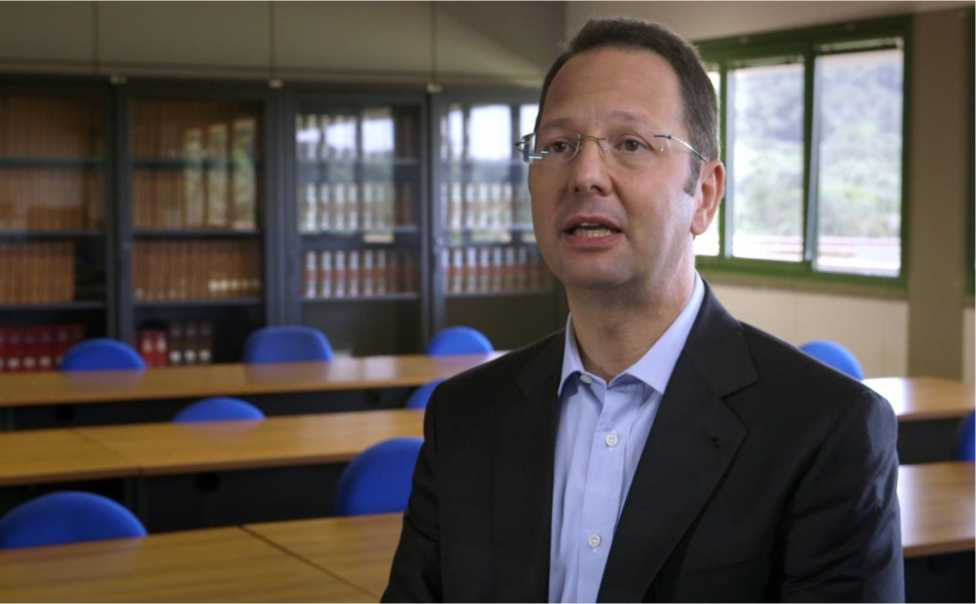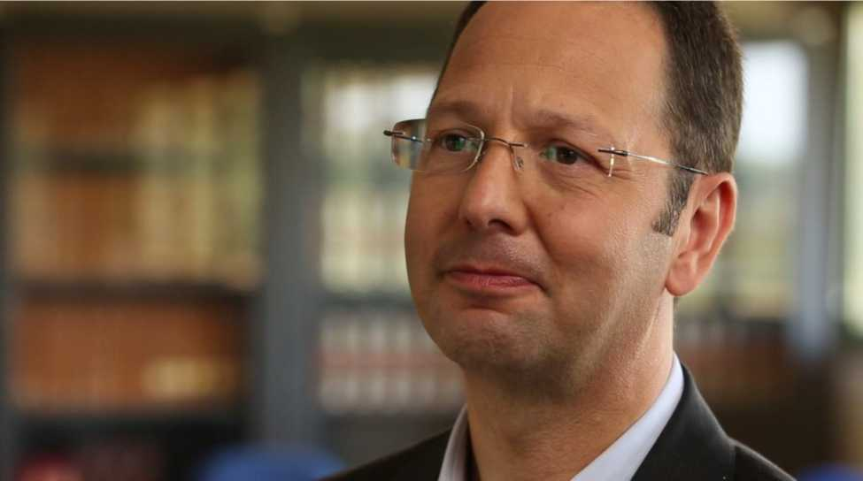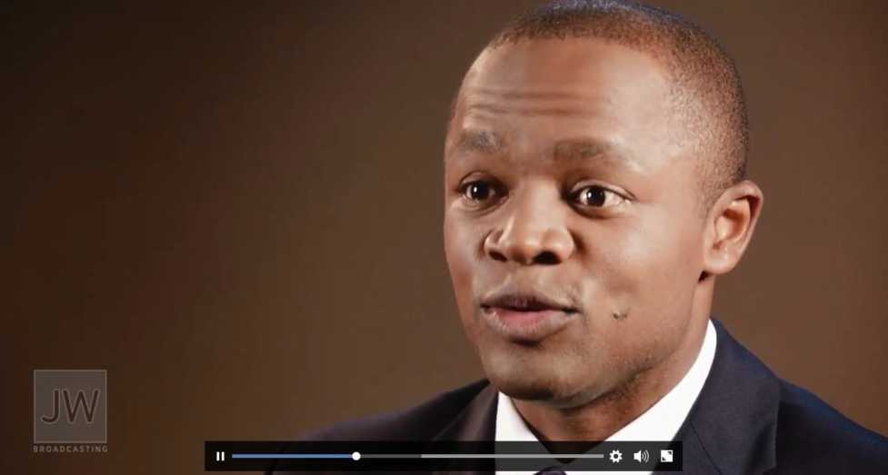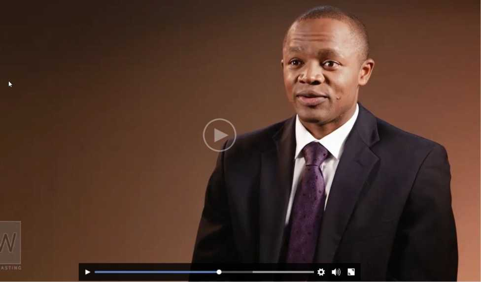Too much headroom ^
Example of subject being too centered ^
Subject on wrong side of frame ^
Example of an awkward shot below the waist, because field of view is too wide ^
This shot is not sufficiently different from wide angle and may be perceived as a jump cut. Get tighter framing \p
Excessive headroom ^
Camera angle too profiled. It is best if we can still see both eyes ^
Subject not placed on the proper third. Too centered ^
Body is awkwardly turned to camera instead of interviewer ^
Subject is too slouched in chair. Also, because he is in an office chair, he will likely be rotating and moving back and forth, making editing continuity a challenge. In addition, try to avoid large, distracting chairs. A lower profile chair with fixed legs is often ideal ^
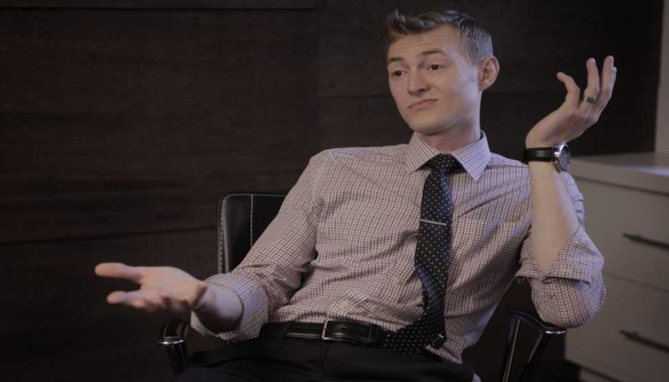Basic Three-Point Lighting for an Interview
(This section is not a rule book. We recommend you apply the principles to your unique circumstances.)
1. Key light
Main source of light—hard or soft
2. Fill light
Light that complements the key light and reduces contrast, generally a soft light source.
Contrast ratio: ratio between key side and fill side. Low contrast suitable for interviews, sitcoms, etc. High contrast suitable for drama
3. Back light (a.k.a. hair, rim, kicker)
Used to add depth or separation between a subject and the background (Generally, it may be best to avoid a backlight that wraps so far that it hits the nose, causing a distracting reflection.)
4. Additional lighting This can add interest to the background
Lighting Faces
Lighting Ratio: The difference between the intensity of light hitting the key side versus the fill side of face, can be adjusted to evoke a different mood in a scene or portray a person in a certain way.
Lighting ratios as much as 4:1 (2 stops difference) can still appear natural. Beyond this, it begins to look very dramatic.
16:1
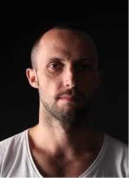Portrait styles: https://www.slrlounge.com/workshop/5-common-key-light-patterns/
Effect That Location and Height of a Light Has on a Face
Notice how shadows play across a face as a light source is moved around a subject at different angles and heights.

The Importance of Light Position: https://vimeo.com/63602119
Since nearly all natural light sources come from above, (sun, moon, diffused clouds, etc.) hard sources of light from below the face level look very unnatural and eerie. This should be avoided when at all possible when filming non-dramatic productions (documentary filming/interviews, etc.).

The hard upward nose shadow looks unnatural and unflattering and is the result of a key light that is at too low of an angle.
ADCASTING
Excellent interactive tool for seeing how light can affect a face:
http://www.cambridgeincolour.com/tutorials/portrait-lighting.htm
Another example of Rembrandt lighting, a technique named after the Dutch painter who frequently used this angle and quality of light to create a triangle patch of light on the shadow side of the face. In our productions, this often creates a very natural and pleasing look and is usually achieved by placing the key light 45 degrees off axis of the subject’s direction of sight and 45 degrees above eye level.
Sample lighting setup for an interview This is quite dramatic and wouldn’t likely be a Watchtower style interview, but it nicely shows
how lighting builds a scene. http://nofilmschool.com/2014/12/blind-spot-gear-creating-series-lighting-tutorials-what-would-you-see
Quality of Light:
Hard vs. Soft Key
The quality of light that lands on a subject can drastically change how they appear and can also affect how the viewer feels about them. Since hard light creates hard shadows, it draws more attention to texture. Generally for non-dramatic filming, we try to light sisters with a softer source of light (also called beauty lighting) because it hides blemishes and wrinkles. Hard lights will do the opposite, emphasizing and exaggerating any imperfections. Especially when filming older friends in a non-dramatic setting, consider using a softer light source. Key point: The softness of a light source is directly related to the size of the light source relative to the subject. Therefore, to make a hard light softer you must increase its size relative to the subject. This can often be achieved by shooting a light through a diffusion material or fabric.

Hard Key Soft Key
Short side vs. broad side key
Video is a 2D medium, and thus creating the perception of depth can be a challenge. A principle that not only helps add depth but also creates a more appealing and flattering modeling of the face is to light someone from the short side of the face. Since most of the time a subject will not be looking directly into the camera lens but, rather, off to one side, we see more of one side of the face than the other. The short side is the side you may want to key from whenever practical.
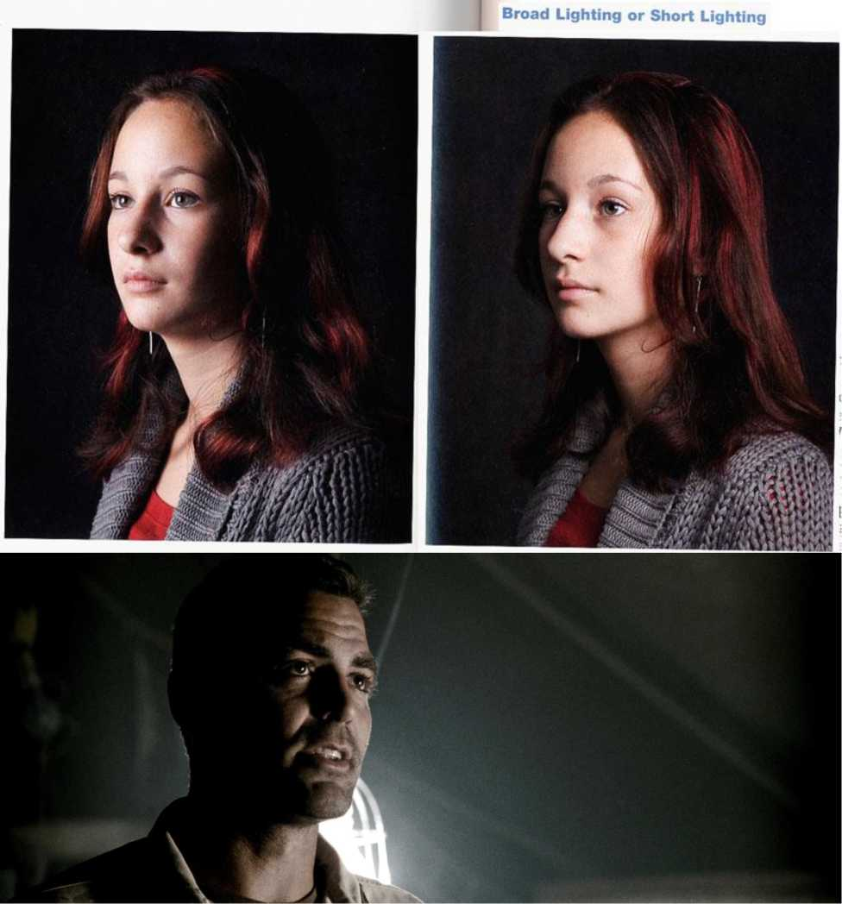The Eye Light
Whenever we talk with someone, where do we look? At their eyes! An eye light is a light that creates a sparkle or reflection of light from the eye's surface, giving life to the subject's eyes. Without the eye light, we often feel detached from the characters because we can’t see their expressions clearly. We look to the eye to see emotion and often a clue as to what the person is saying or feeling. Without this glint in the eye, we can feel that the character is distant, perhaps even mysterious.
The eyes are very reflective, so even a low intensity source can create areflection. The larger the source relative to the subject, the larger the reflected shape will be. This is where the rule “angle of incidence equals angle of reflection” comes into play. Notice how a short or narrow side key often produces this eye light automatically.
Broad or narrow side key? Hard or soft light? Eye light? How do these factors affect the look in the following examples? Which do you like or not like as much, and why?
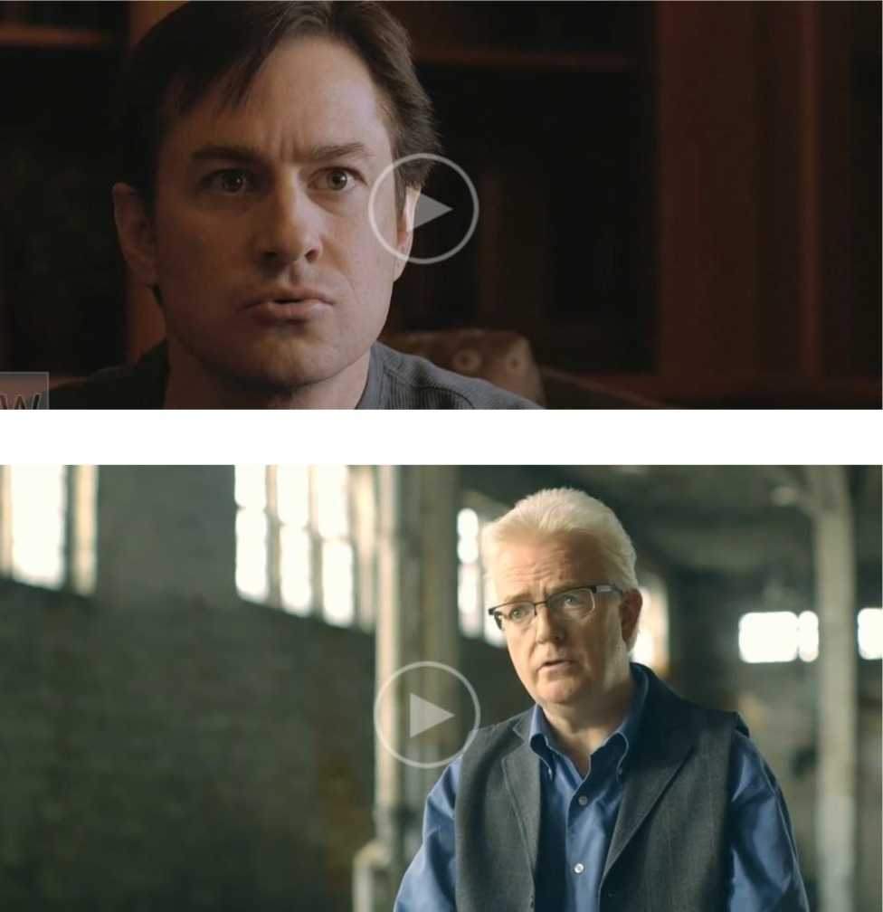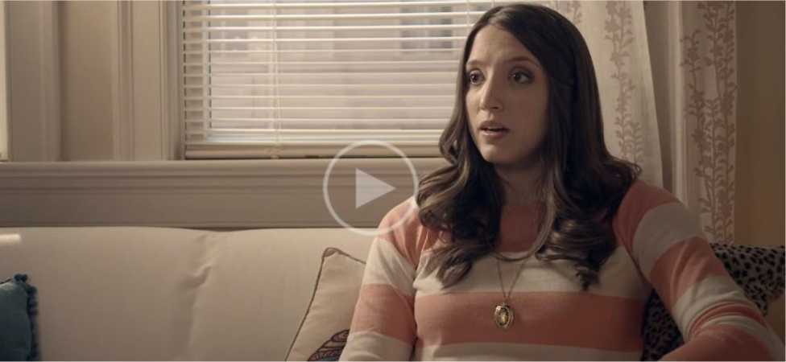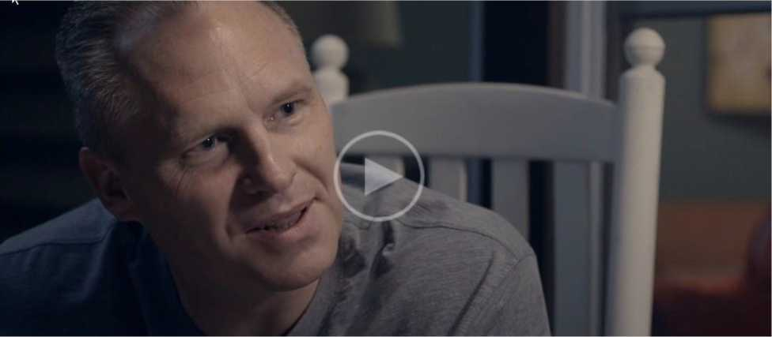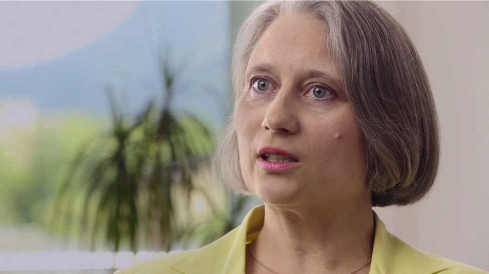The content of the video, the mood of the story, and the look of the person and what they are saying are all factors that may motivate you to light them one way or another. But if you know the reasons why you’re making a certain decision you can be more in control of your story.